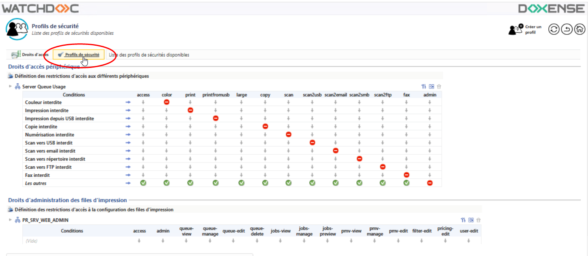
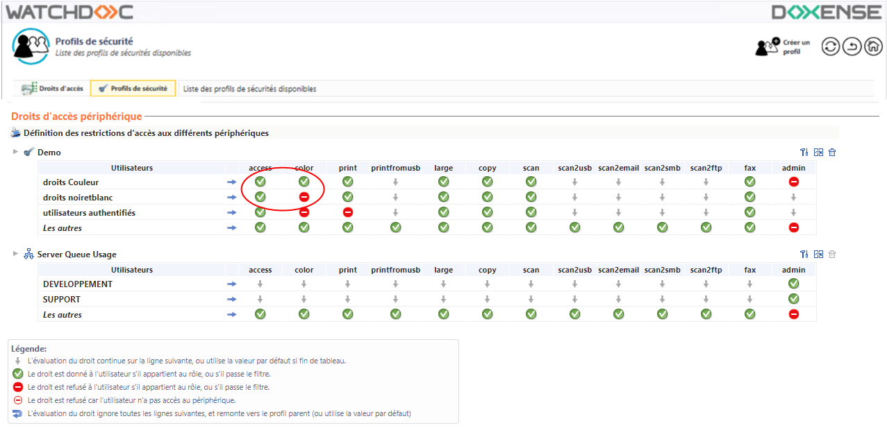
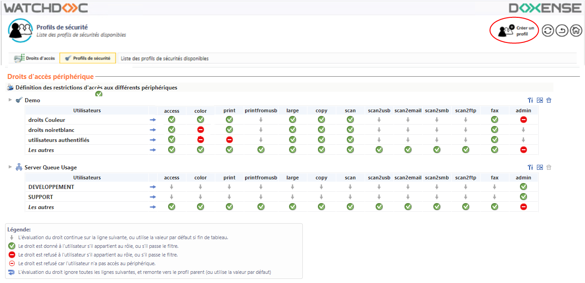
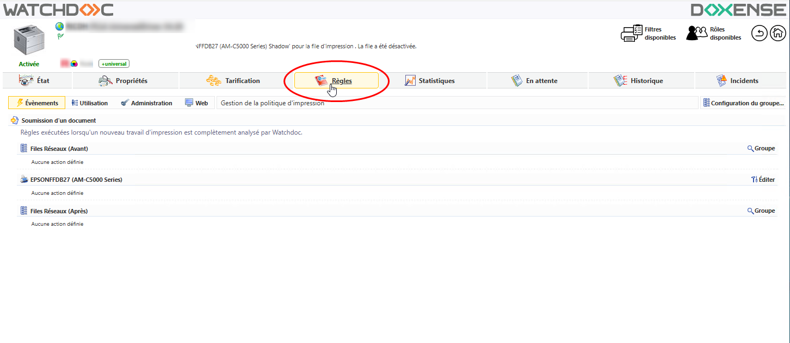
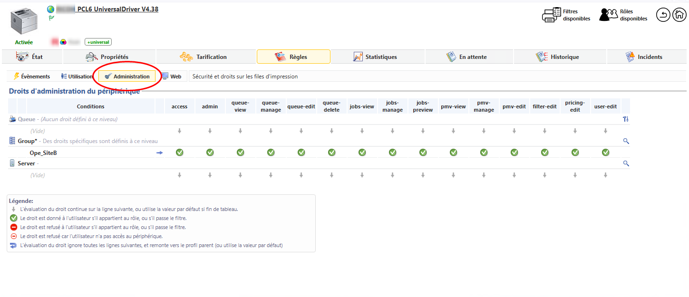
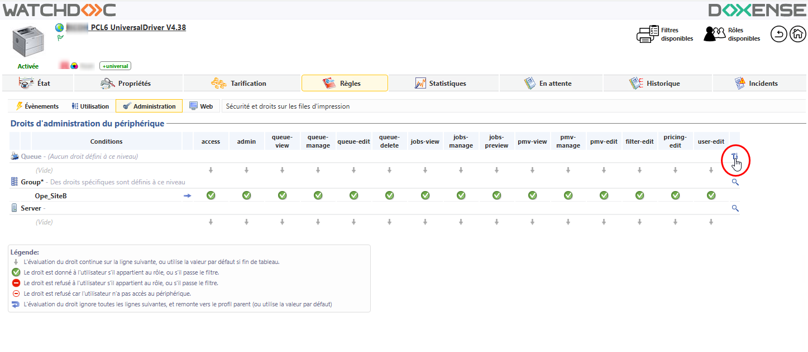
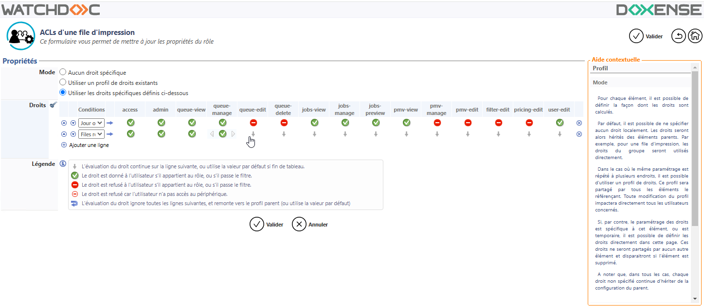

Principe
Dans Watchdoc, il est possible de définir les droits d'accès et d'actions autorisés ou refusés à un groupe d'utilisateurs sur un périphérique (ou un groupe de périphériques) donné.
Aux types d'utilisateurs (par exemple : "membres du Service Marketing") peuvent se combiner des conditions (par exemple : "le week-end").
L'ensemble de ces droits et conditions constituent un Profil de sécurité.
Par exemple, sur un périphérique couleur :
-
les membres du Service Marketing ont le droit d'imprimer en couleur, en format large et depuis une clé USB, sauf le week-end ;
-
les membres du groupe Stagiaires n'ont pas le droit d'imprimer en couleur, au format large et depuis une clé USB, sauf s'ils appartiennent au Service Marketing.
Une fois le profil de sécurité configuré, il convient de l'appliquer à la file ou au groupe de files concerné.
Procédure
Accéder à l'interface de configuration
-
depuis le Menu principal de Watchdoc®, section Gestion, cliquez sur Droits d'accès :

-
dans la liste Droits d'accès, cliquez sur le bouton Profils de sécurité :

-
dans l'interface Profils de sécurité s'affichent les différents profils pouvant être appliqués sur les périphériques selon les utilisateurs concernés. Chaque ligne établit un lien entre un rôle (ou un filtre portant sur des utilisateurs) et une série d'actions. Ces actions peuvent être autorisées ou refusées.

Configurer un profil de sécurité
Pour configurer un profil :
-
dans l'interface Profil de sécurité, cliquer sur le bouton Créer un profil pour en ajouter un dans la liste des profils existants :

-
dans l'interface de Création d'un profil, complétez la section Propriétés :
-
Nom : saisissez un nom explicite attribué au profil de sécurité. Ce nom sera utilisé dans l'interface d'administration ;
-
Description : dans ce champ, ajoutez une description permettant de préciser les caractéristiques du profil. Ces informations ne sont visibles que des administrateurs.
-
dans la section Attribution des droits, configurez les droits d'actions du profil :
-
dans la liste Utilisateurs, sélectionnez un groupe d'utilisateurs ou un contexte d'utilisation ;
-
dans chaque colonne désignant une action, indiquez si l'utilisateur ou le contexte sélectionné a le droit ou pas le droit d'action :
Lorsque la condition sélectionnée dans la première colonne est remplie, Watchdoc vérifie le droit accordé aux actions figurant dans les colonnes suivantes (accès, impression couleur, impression, impression grand format, etc).
Il est possible de combiner des conditions en ajoutant des lignes d'utilisateurs ou de contextes d'utilisation. Dans ce cas, le symbole de la flèche descendante permet de ne pas vérifier une condition et de passer à la suivante.
N.B. : L'interdiction ou l'autorisation d'un droit spécifique n'influe pas sur les autres droits, excepté pour l'action "access" qui, s'il est refusé, bloque tous les autres droits. Dans ce cas, toutes les colonnes sont complétées du symbole.
Par souci de clarté, nous vous recommandons d'utiliser uniquement les informations : le droit est donné ou le droit est refusé et de ne pas utiliser les autres informations.
-
Une fois tous les droits définis, cliquez sur
 pour enregistrer le profil.
pour enregistrer le profil.
Appliquer un profil de sécurité
Pour appliquer un profil de sécurité sur une file ou un groupe de files :
-
dans la liste des files d'impression, sélectionnez la file ou le groupe sur lequel doit s'appliquer le profil de sécurité ;
-
dans l'interface de gestion de la file ou du groupes, cliquez sur le bouton
 Règles ;
Règles ; 
-
dans l'interface de gestion des règles du groupe, cliquez sur le bouton Administration ;
-
Dans cette interface sont listés les droits s'appliquant au périphérique, soit directement, soit par héritage des droits qui s'appliquent au groupe ou qui s'appliquent au serveur :

-
Si aucun droit n'est appliqué par héritage du groupe ou du serveur, ou si vous souhaitez appliquer un profil de droits spécifique à la file, vous souhaitez cliquez sur le bouton
 pour éditer les droits spécifiques à la file :
pour éditer les droits spécifiques à la file :
-
Dans l'interface ACLs d'un groupe de files, définissez les droits que vous souhaitez appliquer sur la file en cochant, dans la section Mode :
-
Aucun droit spécifique : cette option, cochée par défaut, permet de n'appliquer aucun droit spécifique sur la file, mais d'y appliquer les droits hérités du groupe ou du serveur ;
-
Utiliser un profil de droits existants : cochez cette option si vous souhaitez appliquer sur cette file les droits définis préalablement dans un profil et, dans la liste Droits, sélectionnez le profil (cf. chapitre précédent) ;
-
Utiliser les droits spécifiques définis ci-dessous : cochez cette case pour définir des droits s'appliquant spécifiquement à la file et configurez les droits (cf. partie précédente) :

-
Une fois tous les droits définis pour la file d'impression, cliquez sur
pour valider les droits d'administration sur le groupe de files.